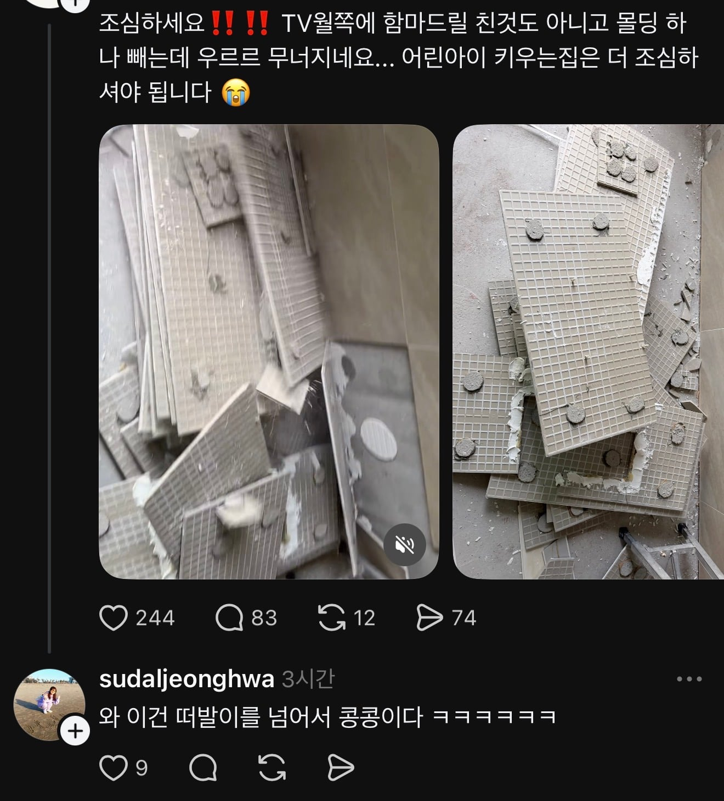
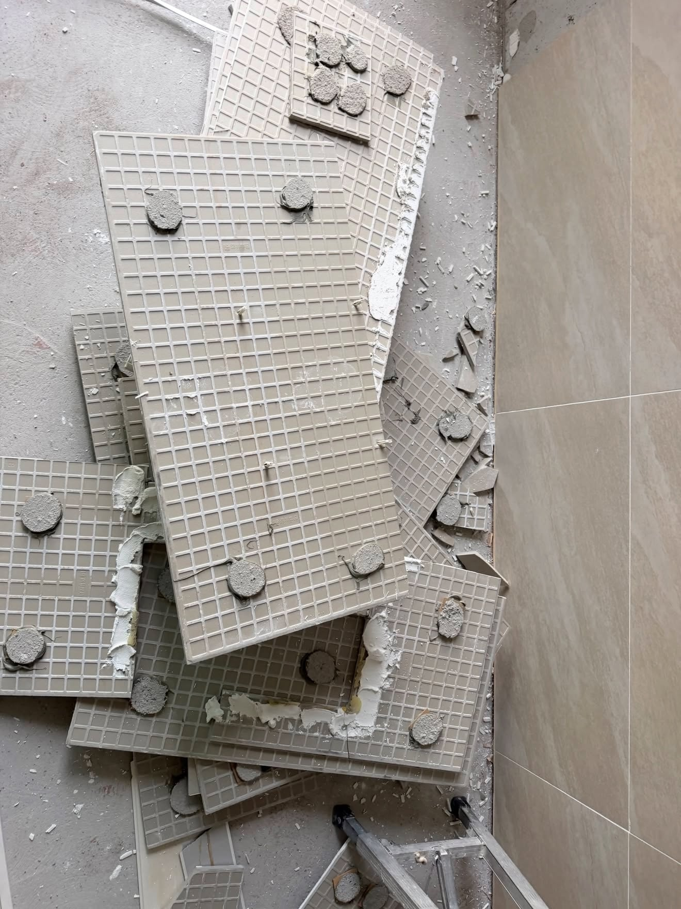

떠발이는 이제 유행 끝났고 콩콩이 시공법 도입됨


떠발이는 이제 유행 끝났고 콩콩이 시공법 도입됨
우리집도 저따구라서 집에서 직접 실리콘이랑 시멘조금있는거로 떠발이로다시붙임.., 시발
cpu 써멀 바르는것만도 못하네
얼마나 아낀거야. 게임에서도 이정도 바르면 접착 안되겠다.
ㅋㅋ 이사가기전 아파트도 거실타일 떠발이로해놔서 산지 5년정도 지났을때 갑자기 밤 10시에 떨어짐 ㅋㅋ 무슨전조도없이 그냥 와장창떨어짐 ㅋㅋ ㅅㅂ
근데 욕실바닥타일은 저렇게 못하지?
물 다 새고 금방 부서질것 같은데
함. 새고 부서지면 무시하면 되니까. 즈그 살집 아니라고 그냥 내다던짐
저리하면 3년이내에 50% 확률로 문제발생
몰탈 다이소에서 사와서 바르나봄
와 ㅋㅋㅋ
뭔 씨발 마카롱 찍냐 ㅋㅋㅋㅋㅋㅋㅋㅋㅋㅋ
직업윤리라는게 없구나